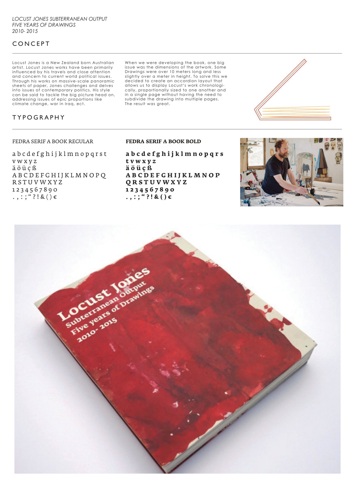
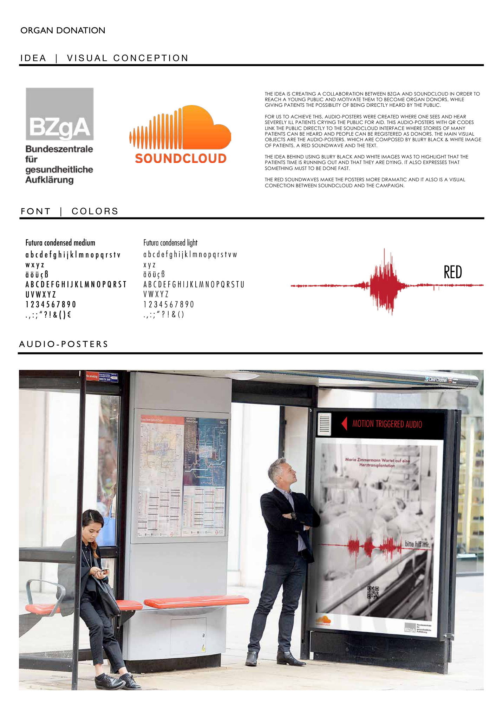

Editorial / Visual Culture
Interstate Magazine
Magazine concept focused on skateboarding, photography, typography and visual culture.
Visual Design · Media · Frontend · Automation
A curated portfolio combining editorial design, campaign concepts, retail/interior visualization and a growing technical profile in web development.
This portfolio is intentionally curated: fewer projects, stronger presentation, clearer storytelling and a more screen-first visual experience.
Selected Work
Magazine concept focused on skateboarding, photography, typography and visual culture.

Accordion-style editorial concept for panoramic artwork and long-format visual storytelling.

Clean, structured and professional editorial design for a foundation context.

Audio-poster campaign connecting public awareness, emotion and interactive media.

High-end minimal flagship store concept for scalable retail implementation.

Summer-themed packaging concept selected as a nationwide campaign in Germany.
Technical Direction
HTML, CSS, JavaScript, responsive layouts and practical interface implementation.
Workflow thinking, content automation, newsletter systems and structured process design.
Long-term focus on Linux, networking, IT/OT cybersecurity and industrial systems.
About
I combine a background in visual design with hands-on technical work. My current direction is media, frontend, automation and technology-oriented roles.